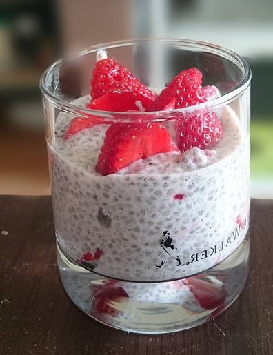

Basil seed (Ocimum basilicum or Ocimum tenuiflorum, aka Ocimum sanctum) is the general term used to refer to the seeds of a few species of herb plants (basil). Generally, these seeds are small, black with a mild, nutty flavor and gel-like texture when soaked in water for 15 minutes. These seeds are commonly used in freshly prepared fruit drinks, sharbats, smoothies, salads, soups, desserts, and baked goods.
The economics of basil seed production are relatively simple. The main cost is the cost of seeds. Basil seeds are relatively inexpensive to produce, and they can be grown in a variety of climates. The main challenge in basil seed production is the need for a consistent supply of water. Basil seeds are sensitive to drought, and they will not germinate if the soil is too dry. The average yield of basil seeds is about 1,000 pounds per acre. The cost of production is about $100 per acre, which includes the cost of seeds, fertilizer, and labor. The average price of basil seeds is about $1 per pound, which means that the profit margin for basil seed production is about $900 per acre.
Basil seeds are typically grown in India, China, and Mexico. The main growing season for basil seeds is from March to June. In plantations, basil seeds are planted in rows that are at least 12 inches apart. The seeds are planted about 1/4 inch deep. Basil seeds need about 1 inch of water per week. They also need to be fertilized every 2 weeks. Basil seeds are harvested when they are fully ripe. The seeds are typically harvested by hand. The seeds are then dried and cleaned. Basil seeds can be stored for up to 1 year. Basil crops are also regarded to be bee magnets, as they attract a lot of bees in the summer (flowering stage).
The history of basil seeds and their use in traditional medicine dates back centuries in India and Southeast Asia. Basil seeds were also used in traditional Chinese medicine. The Shennong Bencaojing, an ancient Chinese pharmacopoeia that dates back to the 1st century AD, lists basil seeds as a remedy for a variety of conditions, including coughs, colds, and headaches.
Basil seeds can also cause allergic reactions in some people. Symptoms of an allergic reactions to basil seeds can include hives, itching, swelling, and difficulty breathing.
Basil seeds are used in a variety of ways in different cultures. In India, they are often added to drinks such as lassi and falooda. In Southeast Asia, they are often added to desserts such as buko pandan and halo-halo. In the Middle East, they are often added to drinks such as hibiscus tea and horchata.
The term "basil seed" can be confusing because it can refer to the seeds of two different plants: sweet basil and holy basil.